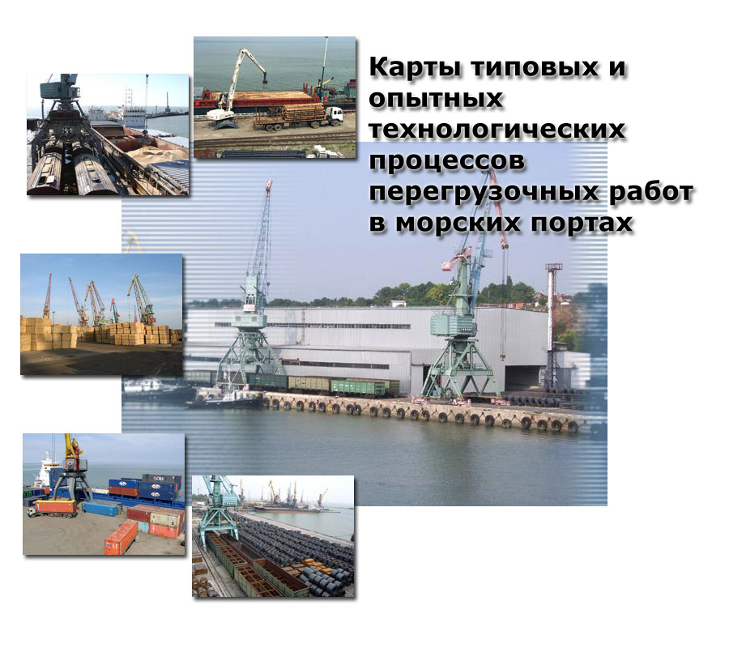

<html><head>
<meta charset="utf-8"><title>карты типовых и опытных процессов перегрузочных работы в морских портах</title></head>
<body></body>
<table width="100%" height="100%" cellspacing="1" cellpadding="1" border="0">
<tr>
    <td width="100%" height="100%" align="center" valign="middle">
	<a href="./index.html"></a>
	</td>
</tr>
</table>

</html>